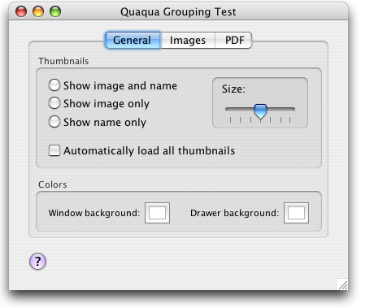

Use a javax.swing.border.TitledBorder to draw a group box (Cocoa NSBox) using the Quaqua Look and Feel. Group boxes have a rounded border and a content area that is slightly darker than the surrounding area.

You can create titled borders with a title text or without one:
|
|
Please note that a TitledBorder does not work properly with a javax.swing.Box component. This is because a Box component does not have an UI delegate at all. Thus its appearance is not fully in control by the Look and Feel in use.
As a workaround, you can use a JPanel with BoxLayout.